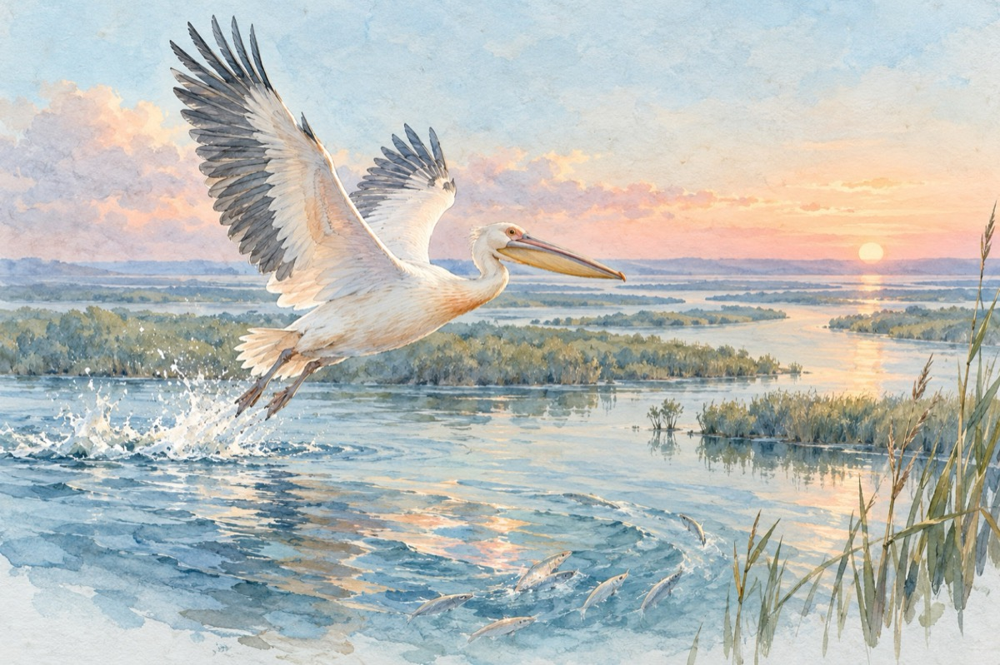

În drumul spre deltă
Cobor, cobor, lin odată cu apele
Cu Oltul aproape și Jiu-n cealaltă parte
La răsărit Siretul și Prutul întind brațele
Iar Dunărea adună în ea râurile toate.
Apele năvalnice se-mpletesc în cunună
Cu bucle făcute din clasicul vânt
Păzite de maluri plutesc împreună
Spre marele și așteptatul deznodământ.
Citesc pe un nor fugar – etichetă
Aici unde apele Dunării se despletesc
Am ajuns, iată-ne-n Deltă
Nu-mi vine să cred, că sunt pe pământ strămoșesc!
Am sosit în raiul mult dorit al apelor
Peștii fac slalomuri argintii înscrise în arce
Ne-nvăluie cântecul înălțător al păsărilor
Iar cerul cu norii fugari e tot mai aproape
Cu-ntinderi nesfârșite de trestii și ape.
Pescarii se-ntorc mulțumiți de la muncă
Cu soarele și el plecat spre asfințit
Pescărușii, cormoranii, pelicanii, în zbor se avântă
Încă o zi a trecut, încă un vis împlinit
Fierbe ceaunul cu borș sub pirostriu,
Iar stelele clipesc odată cu focul din vatră
O balalaică și-un cor de femei cântă în noapte târziu
Un câine rătăcit în deltă-și caută stăpânul și latră.
Vasile Groza